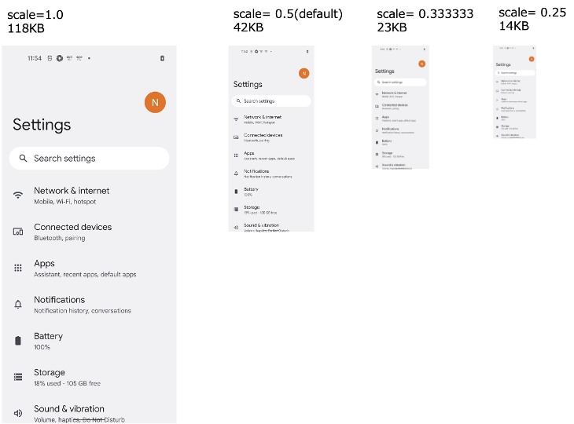
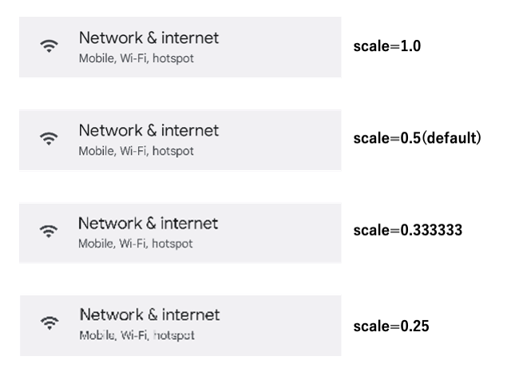

Configuring screenshot
You can configure screenshot in testrun file. See also parameters.
## Screenshot --------------------
#screenshotScale=0.333333
#autoScreenshot=false
#onChangedOnly=false
#onCondition=false
#onAction=false
#onExpectation=false
#onExecOperateCommand=false
#onCheckCommand=false
#onScrolling=false
#manualScreenshot=false
Reducing file size
screenshotScale is 0.5 by default. If you want to reduce the size of screenshot file, set this parameter smaller.
screenshotScale=0.333333
Screenshot file size example

Screenshot clarity

Reduction of triggers
If you don’t want screenshots on condition and on action, you can suppress taking screenshots.
onCondition=false
onAction=false
If you don’t want screenshots on scrolling, you can suppress taking screenshots.
onScrolling=false